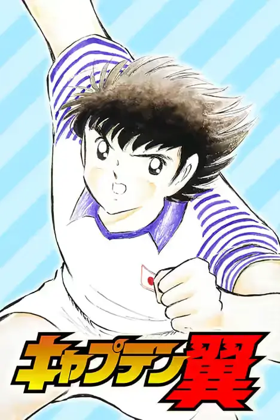
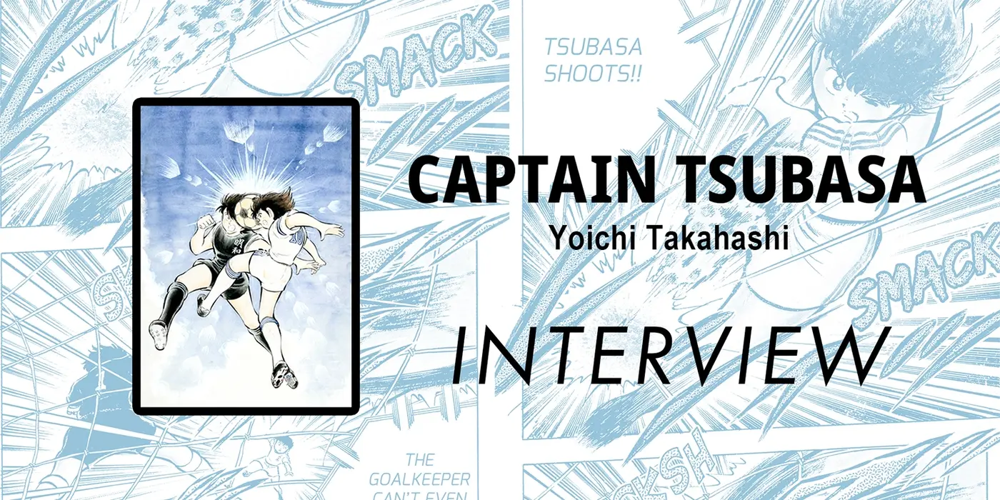
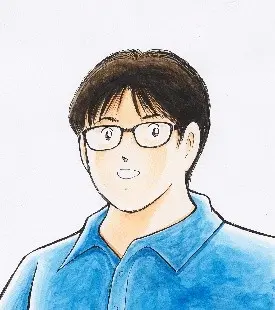

《队长小翼》
Captain Tsubasa
这部在日本掀起空前足球热潮的传奇漫画再次启程！与足球为伴、一同成长的大空翼，如今已是小学六年级的学生。 转学到南葛小学后，翼结识了修哲小学的天才门将若林源三，并向他发起了挑战。

Inside the Mind of Manga Artists
大空翼梦想着成为世界第一的足球运动员。在通往世界舞台的路上，他与众多强大的对手展开了一场又一场激烈的较量！ 《队长小翼》是一部在世界范围内广受喜爱的经典足球漫画。这一次，我们与高桥阳一先生聊了聊， 关于这部连载多年的作品，以及那位非凡的主人公——大空翼。
← 返回特别专栏
Captain Tsubasa
这部在日本掀起空前足球热潮的传奇漫画再次启程！与足球为伴、一同成长的大空翼，如今已是小学六年级的学生。 转学到南葛小学后，翼结识了修哲小学的天才门将若林源三，并向他发起了挑战。

漫画家 · Manga Artist
Yoichi Takahashi
《队长小翼》于 1980 年以短篇形式诞生，1981 年开始在《周刊少年 Jump》上连载。 这部作品让足球在日本人气飙升到前所未有的高度，如今其影响力早已超越国界， 深刻影响着日本乃至全世界的足球运动员。最新系列《队长小翼 RISING SUN FINALS》正以分镜稿形式在网络平台独家连载中。
INTERVIEW
高桥阳一先生访谈 · 全文中文翻译